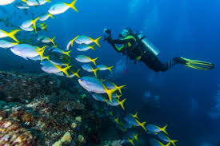

The Pacific coast is also known for pelagic life. From humpback whales to manta rays, this coastline is suitable for all levels of diving. Remember that the southern part of the country is a protected biological reserve.
The rainy season is the best time to go if you are an advanced diver who likes pelagic action. During these months, surges of nutrients attract bull sharks to the islands.
Price
217 USD / person